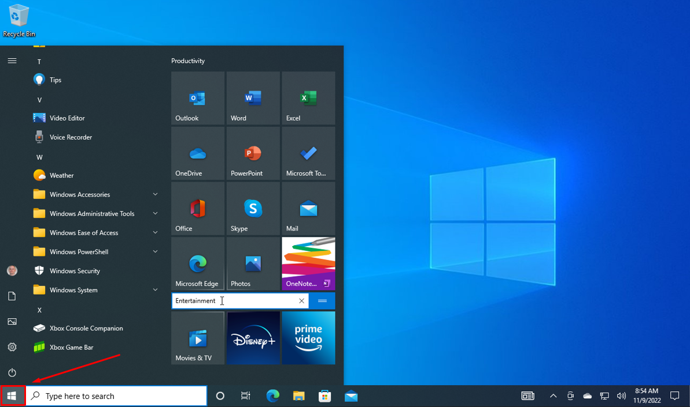
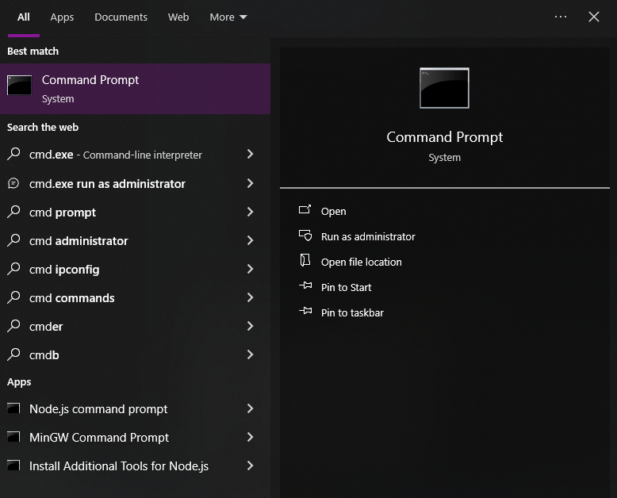
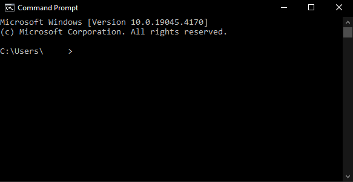
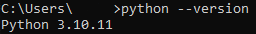
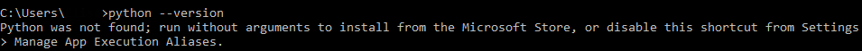
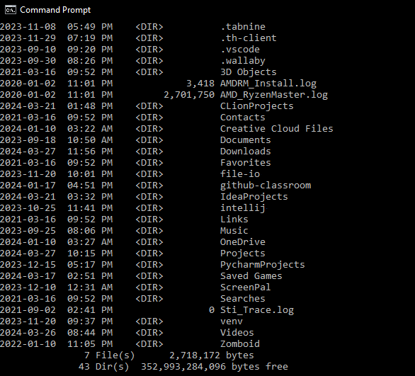
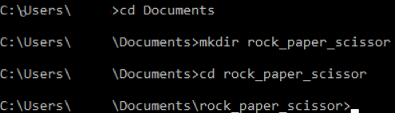
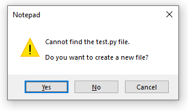
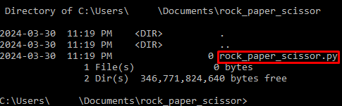

Setting Up Your Project
Overview
This section will focus on setting up a local projects folder using the terminal.
Note
The terms "command prompt" and "terminal" are interchangable. Windows calls it the "command prompt", whereas developers often use the word "terminal". This document will describe the application as the "terminal" in this tutorial in preparation for your computer science degree.
Warning
You must be on a Windows operating system to follow this guide without any errors. If you are on a Mac or Linux operating system, then the following steps may not work for you.
Please read the typographical conventions here before continuing. Remember to press the "enter/return" key after typing in the terminal commands.
Opening the Terminal
This section will focus on how to open the terminal on a computer with a Windows operating system.
-
Click on the Windows icon on the bottom left of your screen to access the "Start menu". 
Note
You can also press the "Windows" key often found at the bottom left of your keyboard.
-
Type
commandorcmdinto the search bar and click on the "Command Prompt" application shown below to open it:or

Note
If there is no search bar, you may also type
cmdright after accessing the Start menu.Success
This window will pop up if you successfully opened the terminal.

Checking for Python on Computer
This section will ensure that  Python is properly installed on your computer using the terminal.
Python is properly installed on your computer using the terminal.
-
Check the Python version in the terminal by typing one of the two commands below:
or
a. If
pythondoes not work, then trypython3instead.Success
If Python is installed on your machine, then the terminal should display the version of Python that is installed, as shown in the image below.

Failure
If running command resulted in an error message similar to the likes shown below, then Python is not installed on your machine.

If your machine does not have Python, then download any 3.x.x version of Python here. The Python installation wizard will guide you through the process.
Navigating Directories
This section will focus on how to navigate file directories using the terminal.
-
List out all directories you are currently in by typing the following:
a. Afterwards, the terminal should look something like this. Your directories will be different.

b. A directory will be labeled as
<DIR>. -
Choose a directory that you want to put your project folder into.
a. For example, you can choose an existing directory like
Documentsshown in the previous step.Notes
Practice good file management. Select a folder that will hold all your future projects and keep it organized.
-
Navigate to the chosen directory by typing the following:
a.
cd, also known aschdir, is a command that changes your current working directory to another directory.b.
directory_nameis a placeholder name. You can replace it with any directory that is listed when you typeddirback in the first step here.Success
Successfully navigating to a directory using the terminal command
cdwill looking something like this:
Creating Project Folder
This section will focus on how to create a project folder using the terminal.
-
Create the project folder by typing the following:
a. The project name
rock_paper_scissorcan be replaced with any name of your choice. This document will use the namerock_paper_scissoras the project name. -
Move into the newly created folder by typing the following:
a. Your terminal should look like this if you have created the
rock_paper_scissordirectory and navigated to it.
-
Create a
 Python file with the name
Python file with the name rock_paper_scissorby typing the following:Warning
If you have used your own project name, ensure that the name has the Python
.pyextension at the end. Excluding it will prevent the written code from running in Python. -
Click "Yes" when prompted to create a new file.

-
Check if the
rock_paper_scissor.pyfile is in your current directory by typing the following:Success
If you're successul, you will see the
rock_paper_scissor.pyfile inside therock_paper_scissordirectory.It should not be labelled with
<DIR>because it is a file.
Warning
If you do not see the
rock_paper_scissor.pyfile inside therock_paper_scissordirectory, then you must return here and follow the instructions again before proceeding with writing the code.Do not close the terminal. This guide will refer back to the terminal to activate other commands.
Conclusion
By the end of this section, you will have successfully completed the following using only the terminal:
- Opened the terminal.
- Navigated through file directories.
- Created a directory for a project.
- Populated a folder with a file.
The next section will focus on coding the game itself. Please proceed to Writing Your First Game.